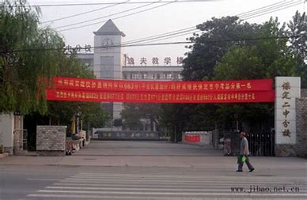
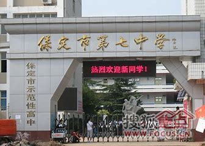

李鑫宇
基本信息
学号:2017013605
性别:男
年龄:21
民族:汉
联系方式
手机:13472277785
QQ:87152657
求职意向
No1.体育教师
No2.UI设计
教育背景展示

“教育的最终目的是启迪人的良知，发掘人的潜能，使人在教育过程中不断修正自己的思想和言行，健康成长，用良知和理性运用知识，用爱心和创意服务于社会，享受美好生活，体现生命的意义。”——这是二中分校的教育理念。

保定市第七中学，地处保定市七一西路777号。学校始建于1957年。是保定市第一批示范性高中和示范性初中。2011年被评为河北省重点中学。学校占地面积34000平方米，建筑面积22000平方米。学校现有教职工300余人，其中特级教师1人，省、市级骨干教师28人。在校学生4300余人。

河北师大最早起源于1902年创建于北京的顺天府学堂和1906年创建于天津的北洋女师范学堂。1996年6月，原河北师范大学、河北师范学院与创建于1952年的河北教育学院、创建于1984年的河北职业技术师范学院合并，组建成新的河北师范大学。2011年9月，原各校区迁至现址实现集中办学。